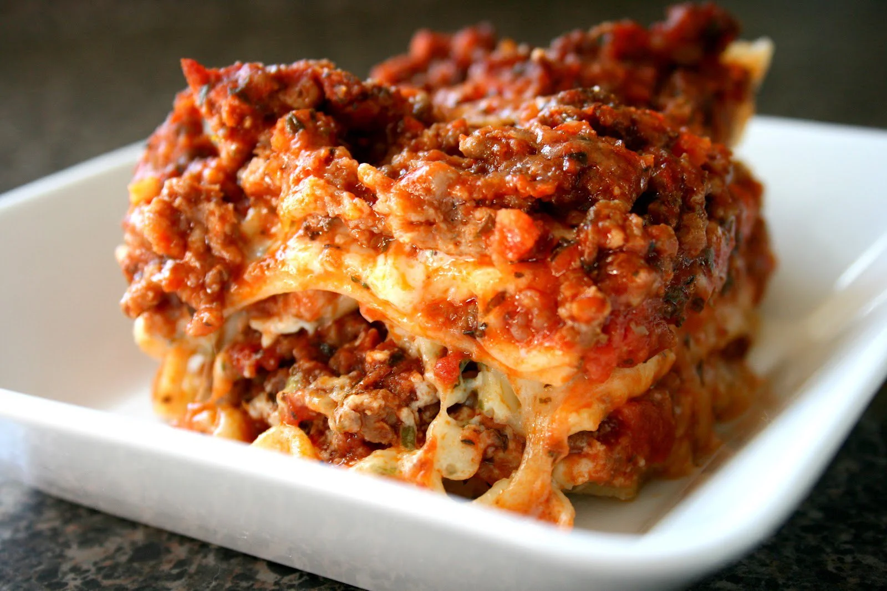

I don't think it's actually possible to plate lasagna this cleanly in
real life
Description
it's lasagna! it's vegan! and somehow it tastes really good???
we're not even vegan... and my fiance really doesn't like lasagna or most
pasta dishes, so the fact they went back for thirds is pretty rad. If you
don't want it vegan, you can just substitute ground beef and real cheeses,
but it actually turned out really well.
Ingredients
Sauce:
Olive oil
1 tube Impossible brand spicy sausage
1 onion, small diced
6 garlic cloves, minced
1 small can tomato paste
1 small can tomato sauce
1 can crushed tomato
Unsweet plain oatmilk
Unsweet plain almondmilk
Sauce seasonings:
Basil
Oregano
Parsley
Cumin
Paprika
Black pepper
Red pepper flakes
Thyme
Salt
1 box lasagna noodles
Eggplant, cut into 1/2" rounds
Toss to coat in olive oil, salt, cumin, paprika
Roast at 400° F for 25-30 minutes until tender and golden
brown.
Arugula
Violife "feta"
Lisanatti almond "mozzarella", grated
Violife "parmesan"
Method
For the sauce:
Saute onion and garlic in olive oil with a pinch of salt until onion is
softened (not caramelized).
Add sausage and cook until evenly browned.
Stir in tomato paste until sausage is evenly coated.
Add tomato sauce, reduce, add crushed tomato.
Add one paste can + one sauce can's worth of almond milk, as well as one
crushed tomato can's worth of half oat and almond milk.
Add seasonings to taste (more than you think you'll need of each!) and
reduce slightly. Salt to taste, set sauce aside.
For the noodles:
Boil in well-salted (like the sea!) water 4-5 minutes, until just barely
flexible.
Layer between parchment paper to keep from sticking together, set aside.
Putting it together:
Lightly oil a 9"x13" glass baking pan.
Make 4 layers, repeating in order:
1.5 cup sauce
Eggplant rounds, evenly spaced
Thin layer arugula
Noodles, trimmed so as to not overlap
Feta and mozzarella
Top with 1.5 cup sauce and all cheeses (incl. parm)
Cover with foil and bake at 325° F for 1 hour.
Raise temp to 425° F. Remove foil and bake ~10 min, until cheese is
melted and top is golden brown.